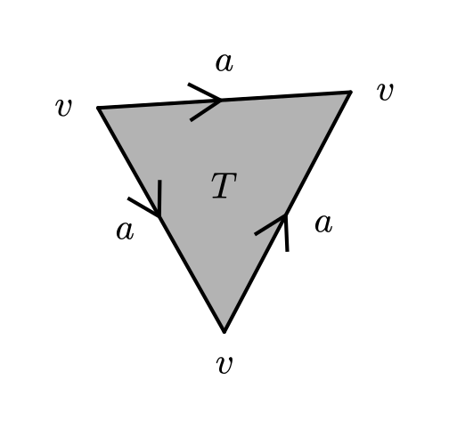

University of Florida, Department of Mathematics
Topology PhD Exam, January 2026
Be neat, and do not write too small.
For the first five problems, show all of your work and support all statements.
-
Prove that every metrizable space \((X,d)\) is normal.
-
Let \((X,d)\) be a compact metric space. Let \(f:X\to X\) and suppose there is some \(c<1\) with \(d(f(x),f(y))\leq c\cdot d(x,y)\) for all \(x,y\in X\). Prove there exists a unique \(x\in X\) with \(f(x)=x\).
-
Consider the \(\Delta\)-complex \(X\) drawn below. (Note the orientation of the three edges carefully.) Compute the simplicial homology \(H_i(X)\) for \(i=0,1,2\).

-
For \(M\) a compact orientable odd-dimensional manifold without boundary, show that the Euler characteristic \(\chi(M)\) is zero.
-
This problem has two parts.
-
(a)
Let \(n>m\). Show there are no maps from \(\mathbb{RP}^n\) to \(\mathbb{RP}^m\) inducing a nontrivial map \(H^1(\mathbb{RP}^m;\mathbb{Z}_2)\to H^1(\mathbb{RP}^n;\mathbb{Z}_2)\).
-
(b)
Prove the Borsuk–Ulam theorem as follows. Suppose on the contrary that \(f:S^n\to\mathbb{R}^n\) satisfies \(f(x)\neq f(-x)\) for all \(x\). Define \(g:S^n\to S^{n-1}\) by \(g(x)=\frac{f(x)-f(-x)}{\lVert f(x)-f(-x)\rVert}\), so \(g(-x)=-g(x)\) and \(g\) induces a map \(\mathbb{RP}^n\to\mathbb{RP}^{n-1}\). Show that (a) applies to this map.
-
Answer the following ten problems with complete definitions, complete statements, an example, or a short proof.
-
State the Tietze Extension Theorem.
-
Let \(M_g\) be the orientable surface of genus \(g\), i.e., the \(g\)-fold connected sum of tori. Use the Seifert–van Kampen theorem to derive the fundamental group of \(M_g\) for \(g\geq 1\).
-
Show that if \(g:S^n\to S^n\) is continuous and \(g(x)\neq g(-x)\) for all \(x\in S^n\), then \(g\) is surjective.
-
Prove that if \(f:S^n\to S^n\) has no fixed points, then \(\deg(f)=(-1)^{n+1}\).
-
Show that \(\mathbb{R}^{\omega}\) with the box topology is not connected.
-
State the Five-Lemma.
-
Show that every map \(f:\mathbb{CP}^n\to\mathbb{CP}^n\) has a fixed point if \(n\) is even.
-
Let \(p:Y\to X\) and \(q:Z\to X\) be basepoint-preserving covering space maps, where \(X,Y,Z\) are path-connected and locally path-connected. Prove that if \(p_*(\pi_1(Y))=q_*(\pi_1(Z))\), then the covering spaces \(p\) and \(q\) are isomorphic.
-
Does there exist a closed orientable \(18\)-dimensional manifold \(M\) with \(H^9(M;\mathbb{Z})\cong\mathbb{Z}\)?
-
Prove that if \(X\) is the Möbius band and \(A\) is its boundary circle, then there is no retraction \(r:X\to A\).